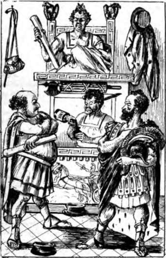

Charging The Radicals With The Continued And Exasperating Wet Weather. Continued
Description
This section is from the book "Smoked Glass", by Orpheus C. Kerr. Also available from Amazon: Smoked Glass.
Charging The Radicals With The Continued And Exasperating Wet Weather. Continued
This style of whispering at a play may be all very well, my boy, for the fragile female mind, which can't bear suspense ; but there may be persons in a theatrical audience who do not care to have the whole interest of the plot anticipated for them.
After which biting sarcasm at the expense of the male being in yellow kids, I proceed to note the debut of Sergeant O'Pake, who, having recently taken the pledge, has refused to take a brevet with the President. Manager Thaddeus Butler looked at him obliquely, and says he, -
" Sergeant, you are now in the presence of your Maker and Myself to answer truly unto all that I ask you, and to refuse all answers to questions from the insects for the defence. At the time of your interview with the thing called Johnson, was he, or was he not, in such an attitude as to render it possible for him to offer you a brevet? "
O'Pake
"He was".
Manager
"From the sound of his voice, was it likely that he could have asked you, audibly, to take a brevet with him, and thereby be bribed to become his ally in a usurpation ? "
O'Pake
"He was able to speak, and of course he could have spoken audibly on any subject; but I am not prepared to - "
A very cross examination.
Manager
"I must insist on a direct answer to my question, without comment. Was the sound of his voice such that it would have been possible for him to ask you, audibly, - so that if another person had been present that person could have heard it,-to take a brevet with him?"
O'Pake
"It was".
Manager
" That is sufficient. No sane member of the jury will dare to doubt, after this, that Johnson has attempted to corrupt the army. Have the maniacs for the defence anything to say to the Sergeant? "
Andrew Stanbery, one of the counsel for the defence, tore his hair at this crisis, and says he, -
"You say, Sergeant, that our client was in such an attitude as to render it possible for him to offer you a brevet. Did he offer it?"
Manager Butler
" I object. The defendant is on trial for High Crimes and Misdemeanors, and his mere acts are of no account. What we have to prove is that his attitudes rendered it possible for him to do what is charged against him".
Coroner (Represented By Supernumerary Chase)
" The Court thinks that the last question is admissible, but will leave it to the Jury".
The Jury then took a vote, which resulted in forty-nine Thaddeuses against the question, to one Andrew for it. 9*
Thereupon Andrew Evarts, another of the counsel, rent his garments with anguish, and says he, -
"Sergeant O'Pake, you say that our client's voice could have articulated a request for you to take a brevet with him. Did he request you to take it? "
Manager Butler
" I object. It is our purpose to prove that the prisoner's voice was such as to have made it possible for him to have articulated the request; and, presumptively therefrom, that he did do it. The own words of a criminal on trial are never accepted as evidence, and I am surprised that the learned insect on the other side has dared to put such a question".
Coroner (Represented By Supernumerary Chase)
" The Court is of the opinion that the counsel's question should be allowed, if that of the manager is, but will leave it to the Jury".
The Jury then took a vote, which resulted in forty-nine Thaddeuses against allowing the question, and one Andrew for it.
Manager Butler
"Sergeant O'Pake may withdraw. We have succeeded in proving by him that the criminal is presumptively guilty, by being in an attitude, and having articulate ability, to intoxicate and corrupt the army with brevets.* The managers will now go to their dinners, and advise the Jury to do the same, while the learned Andrew Curtis delivers his soliloquy for the defence".
* General Sherman's testimony.
Two days, my boy, were occupied by this soliloquy, during which the jurors ate sandwiches, wrote home to their families, and animatedly discussed the prospects for the Presidency in 1868. It was really a great courtesy to the counsel for the defence to allow their associate the use of the Senate Chamber for the delivery of his soliloquy ; and the delicacy with which the whole Court retrained from listening to a single word of it must have afforded him and his associates all the luxury of being entirely alone; yet Andrew Stanbery has been sick ever since.
At a late hour last evening, as I sat reflecting upon all this in my room at Willard's, a member of the freed-negro race brought me a card inscribed thus, - *
K. K. K.
Cold Victuals Klan
(Print of the moon reduced to her " last Quarter.")
Klansmen- Behold the Deed without a name - (Lithograph of a Sixth-Mortgage, without signature.)
By the cause we failed to win ;
By our solemn Southern pact; By our utter lack of tin; -
Come and sign the Bankrupt Act.
(Revenue Stamp.) (Forney Print.)
• Appendix, 3.
As I perused this mystic and awful document, the perspiration came out freely upon my lofty brow, and I turned to the member of the freed-negro race in trembling haste.
" Who gave you this? " asked I, fearfully.
The honest African's teeth chattered, and says he,- " S'help me gad, I don't know, mars'r; but I think he's a gemman from de Alms House".
" Show him up," said I, with great agitation.
The freed bondman disappeared, and in four moments thereafter I beheld a dreadful figure entering my room. It was a tall, gaunt shape, wearing an overcoat striped blue and red, and inscribed " Smithby's Patent Weather-Proof Awning." Over its shoulders, and hanging just below the waist, was an additional flowing white linen surtout, marked, " Jinks's Celebrated French Yoke Shirts. No. - Broadway." Against the empty stomach of the spectre hung a hand-organ, and under his left arm he carried a penny-seeking monkey.
"Horrible mockery," cried I, instinctively feeling for my pocket-book, "what wantest thou of me? I've got nothing to advertise; I don't want to purchase a water-proof awning; and as for French yoke shirts, I belong to a nation which recently helped the Mexicans to get rid of them. Who art thou?"
The dreadful shape tucked the monkey more tightly under his arm, and says he, -
" I'm the Ku-Klux Klan! " Here the spectre smiled horribly, and deposited the half of a boot-leg which served him for a hat upon a table near my open window.
"Look out," says I, cautiously, "or that chapeau will blow into the street".
"It can't," says he, in a hollow voice; "there's a heavy mortgage on it".
Struck by the familiarity of the voice, I looked more closely at him, and recognized Loyola Munchausen. There he stood, a perfect walking-advertisement of the sunny South, and I paused to hear him speak again.
" My mission," says he, proudly, " is, in the first place, to ask if you have anything to advertise with my Klan, which is now issuing cards in every style, - ' K. K. K., - mortgages for all,-sign of a coffin. Try Jobbins's cough-drops, - sign of a dagger. Our Plantation Bitters are the Best,-sign of a serpent. Use Podger's Hair-Dye.'- If you refuse to avail yourself of this popular medium, we fall back upon our countless wrongs, and demands- Demand, by Heaven! -that some quarter shall be shown the South".
I silently handed him a quarter.
"Do you want a tune for this?" says he, loftily, placing the money in his clam-shell pocket-book, " do you wish to witness the gyrations of the monkey in return for showing quarter to my section ? "
Sadly I answered in the negative, and he departed as abruptly as he had arrived.
The South, my boy, may have slept once upon soft down, but she is now hard up; and from what I have seen of the spring styles worn by her sons this year, I am firmly convinced that she sadly needs re-dress.
Yours, charitably,
Orpheus 0. Kerr.
Continue to:
- prev: Letter VII. Charging The Radicals With The Continued And Exasperating Wet Weather
- Table of Contents
- next: Letter VIII. Chanting An Astonishing Lay In Honor Of Clear Weather Once More